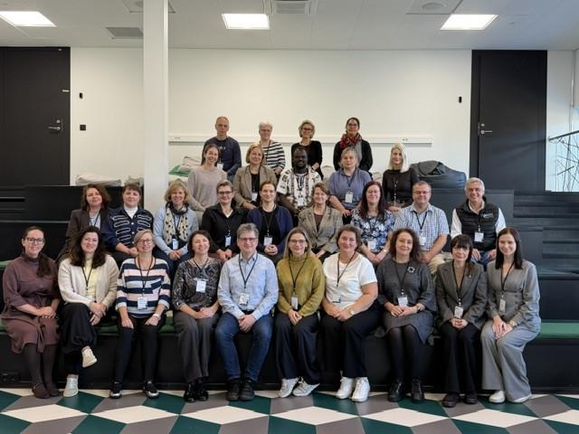
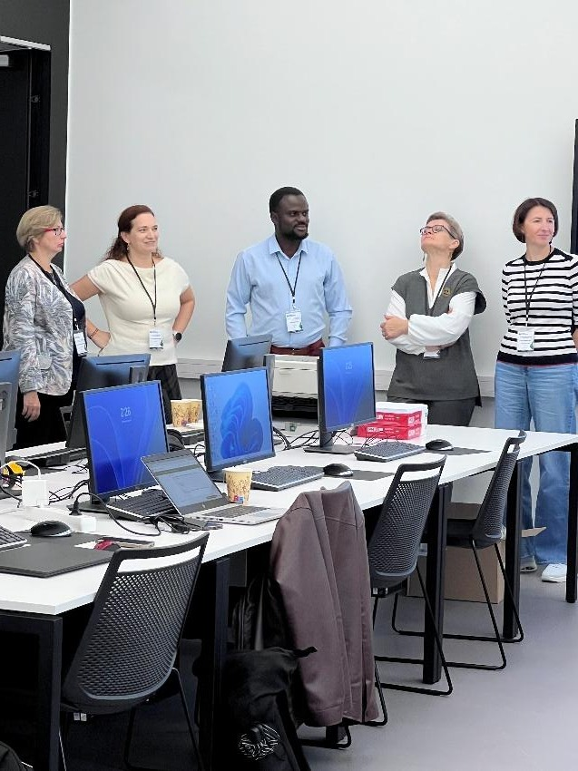
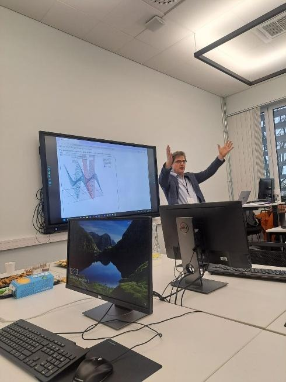
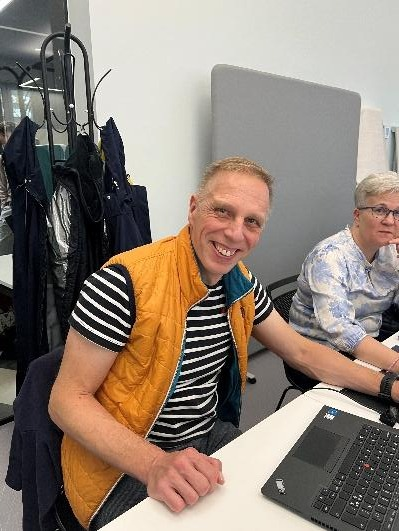

STACK BIP 2026 | Supporting STEM Teaching through Digital Assessment Practices
Oksana Labanova
Event details
- Date:Tallinn, Estonia · 5–9 October 2026
- Place: TTK University of Applied Sciences, Tallinn, Estonia
- Official BIP website: Supporting STEM Teaching
- Contact person: Oksana Labanova (oksana.labanova@tktk.ee)
- The BIP brought together 25 international attendees from nine countries: Ukraine (6), Lithuania (5), Latvia (4), Germany (3), Finland (2), the Czech Republic (2), Spain (1), France (1), and Italy (1).

Overview
TTK University of Applied Sciences hosted a five-day international Blended Intensive Programme (BIP) exploring how digital tools can support meaningful assessment in science, technology, engineering and mathematics (STEM). The event brought together educators and colleagues from different higher education institutions to exchange experience, develop practical assessment skills and discuss the challenges and opportunities presented by artificial intelligence.
The five-day programme was preceded by an online meeting and preparatory activities in Moodle, where participants familiarised themselves with the platform and worked on STACK questions. As part of the online component, participants also prepared presentations on assessment practices in their respective teaching fields, which served as a starting point for exchanging experiences during the on-site programme. An online chat provided a space for communication, sharing ideas and discussing questions ahead of the face-to-face sessions.
Programme content
The programme centred on STACK, the computer-aided assessment system for mathematics and related subjects, together with interactive visualisation using JSXGraph. Participants explored how to author and manage STACK questions in Moodle, use question banks and good-practice examples, review learner engagement, and integrate interactive mathematical graphs. The discussion also addressed designing tasks that assess students’ reasoning rather than final answers alone. This was the second BIP organised by TTK University of Applied Sciences focusing on digital tools for STEM education with STACK. The first programme, "Visualisation Tools for Teaching in STEM", took place in November 2025 and focused on interactive visualisation using Desmos, GeoGebra for STACK, and JSXGraph for STACK. The 2026 programme continued this work.
Time table
- Monday, October 5: Welcome, exchange of approaches to assessment in STEM, and an introduction to the STACK community.
- Tuesday, October 6: Research using STACK and research focused on STACK; creating initial STACK assignments for Moodle; using AI to develop and debug assignments.
- Wednesday, October 7: Managing courses and question banks in STACK; advanced assignment-creation techniques; examples of effective practices.
- Thursday, October 8: Introduction to JSXGraph, integrating JSXGraph with STACK, and working within the Maxima STACK Sandbox environment.
- Friday, October 9: Group discussion on assessment in STEM in the age of AI.
The programme combined hands-on work with STACK and JSXGraph, international exchange of teaching practice and reflection on what constitutes meaningful assessment when students can readily access generative AI tools. The programme was made possible thanks to the contribution of our international trainers, who shared their expertise and practical experience.
A significant part of the programme was dedicated to hands-on activities, with participants working directly in Moodle to create, test and refine STACK questions. This practical approach allowed participants to apply newly acquired knowledge immediately and explore how STACK could be used in their own teaching.
Trainers and contributors
Juma Zevick Otieno (University of Trieste, Italy) led the STACK workshops on Tuesday and Wednesday. He introduced participants to research opportunities related to STACK, guided them through creating their first STACK questions in Moodle, and demonstrated how AI tools can support question development and debugging. He also covered advanced question authoring, course management and the use of STACK analytics.
Dr Wigand Rathmann (Friedrich-Alexander University Erlangen-Nuremberg, Germany) supported the introductory STACK workshop and led Thursday's practical sessions on JSXGraph and its integration with STACK. He also introduced the Maxima STACK Sandbox. His workshops demonstrated how interactive mathematical visualisations can be incorporated into assessment tasks.


Dr Konstantina Zerva (University of Edinburgh, UK) participated in the program online. She presented the results of the HELM project, which involved the development of instructional materials and STACK problem banks for mathematics. She shared practical approaches to developing and organising digital assessment materials, giving participants ideas they could adapt to their own teaching.
Jarkko Hurme (Oulu University of Applied Sciences, Finland) led the final reflection on what and how we can assess in STEM subjects in the age of artificial intelligence. His session encouraged participants to consider the challenges AI presents for traditional assessment and to discuss possible directions for future teaching practices.
